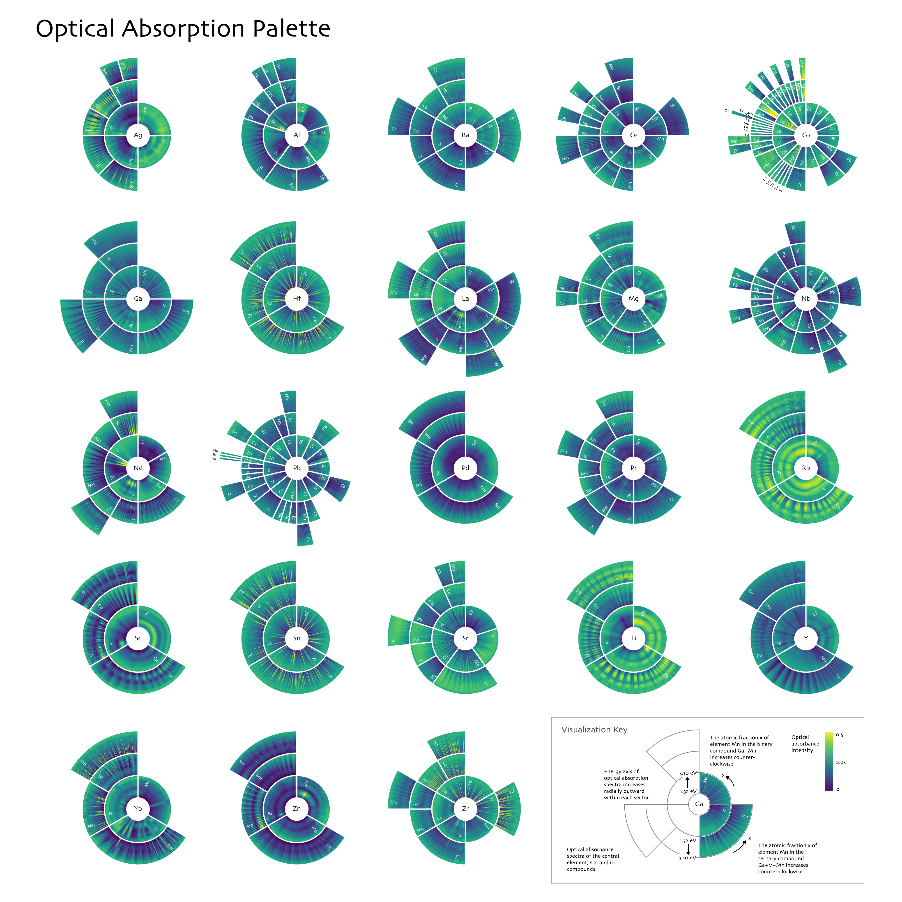
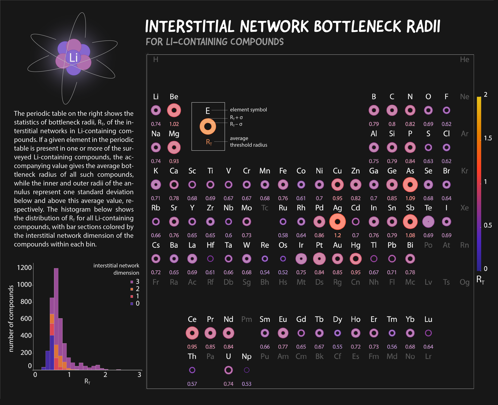
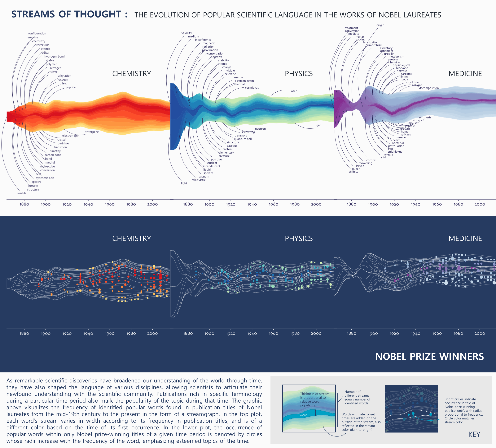
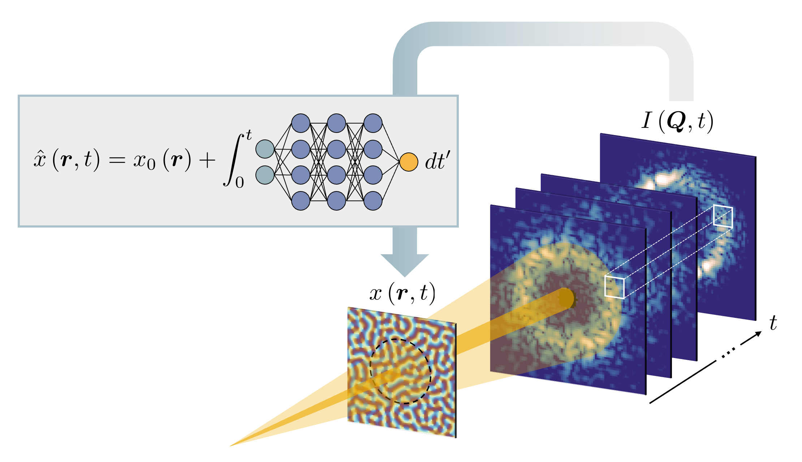
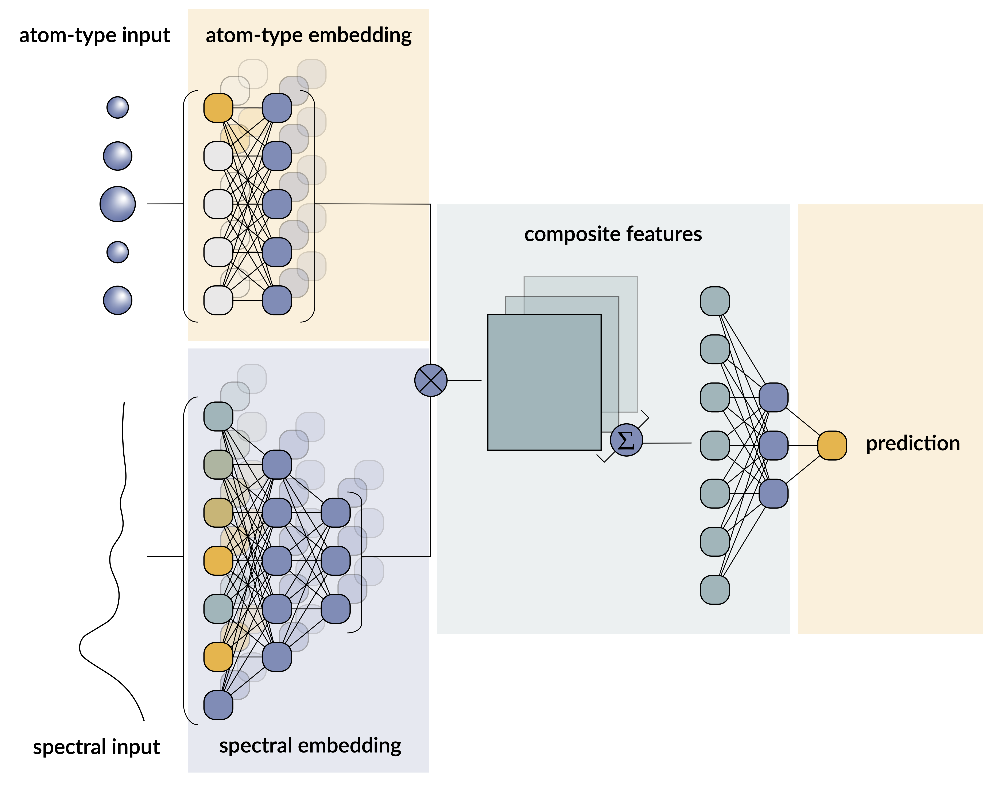
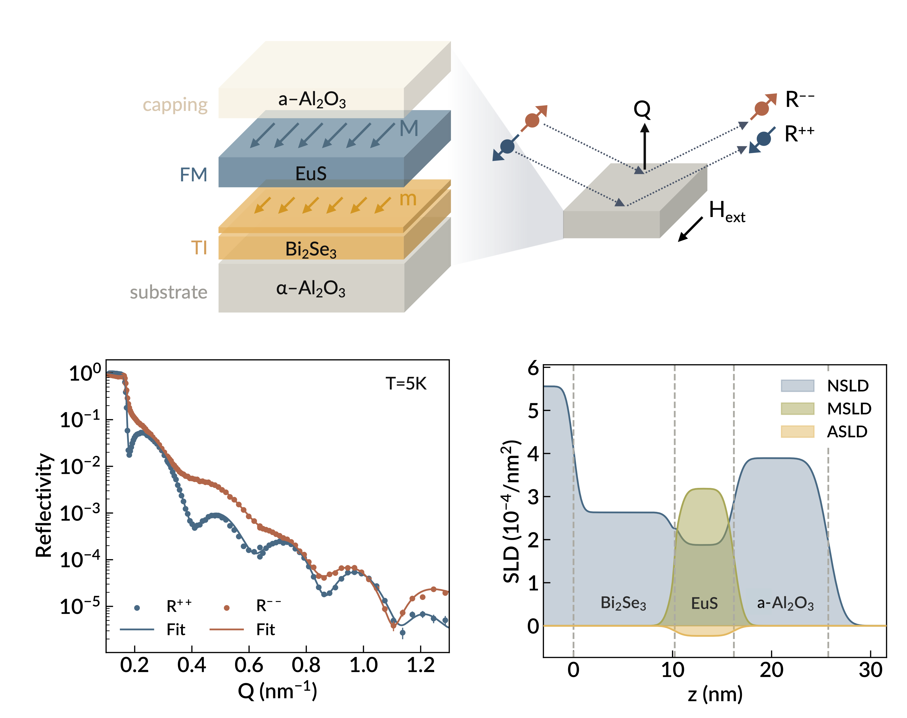
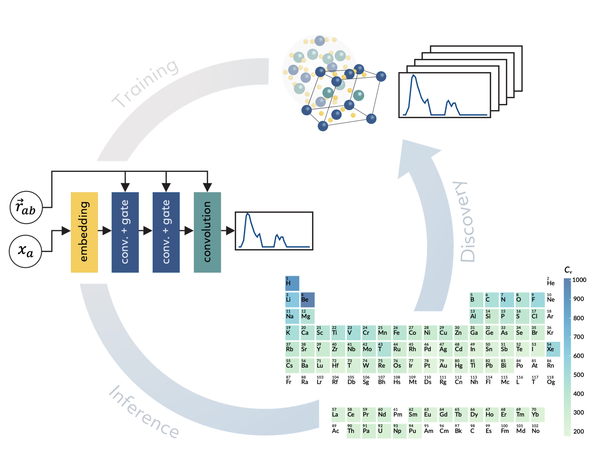

Assistant Computational Scientist • Argonne National Laboratory
Hi! I'm an Assistant Computational Scientist at Argonne National Laboratory working at the intersection of machine learning and materials characterization. My research focuses on developing physics-aware deep learning models to assist the analysis of X-ray scattering and spectroscopic measurements of nanoscale materials. Alongside my research, I'm also enthusiastic about science communication through teaching and scientific data visualization.
Interactive tutorial exploring vision transformers and masked autoencoder architectures with hands-on implementation examples.
View RepositoryTutorial demonstrating how equivariant neural networks can be applied to predict phonon density of states in materials science.
View DOIWorkshop materials covering computational approaches to generative art and principles of effective scientific visualization.
View MaterialsComprehensive workshop on applying machine learning techniques to X-ray scattering and spectroscopy data analysis.
View Materials



N. Andrejevic, et al. npj Computational Materials, 10(1):225, 2024.
View Publication
N. Andrejevic, J. Andrejevic, et al. Advanced Materials, 34(49):2204113, 2022.
View Publication
N. Andrejevic, Z. Chen, et al. Applied Physics Reviews, 9(1), 2022.
View Publication
Z. Chen, N. Andrejevic, T. Smidt, et al. Advanced Science, 8(12):2004214, 2021.
View Publication